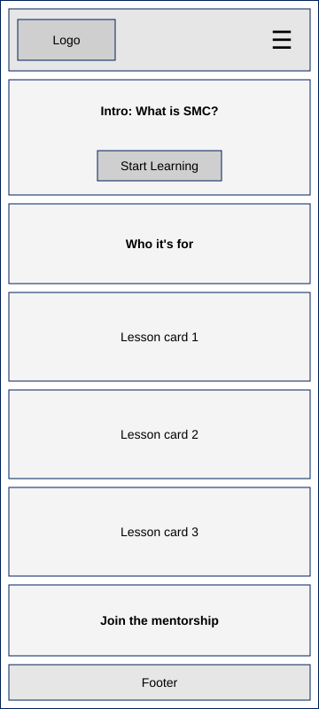
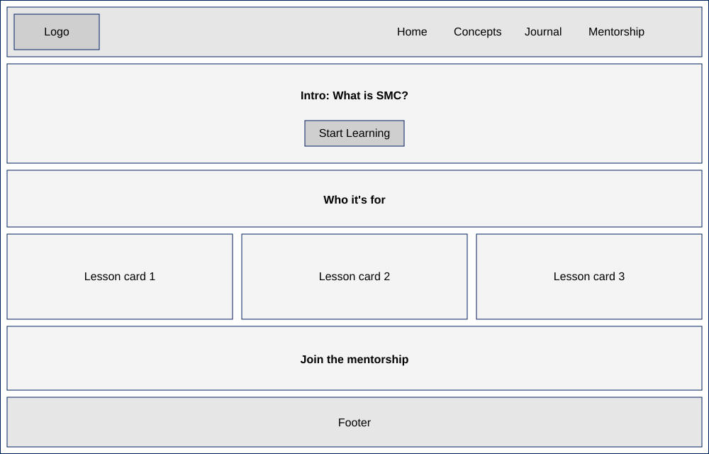

Site Name
SMC LAB is named for Smart Money Concepts, the trading approach the site teaches. "Lab" suggests a place to learn by practicing, which fits the lessons and the trade journal.
Site Purpose
SMC LAB teaches beginners the basics of Smart Money Concepts forex trading through lessons on market structure, order blocks, liquidity, and risk management. Visitors can filter lessons by level, log trades in a journal, and sign up for mentorship through a form.
Scenarios
- What is market structure, and where should a beginner start?
- How can I log my trades and track my progress over time?
- How do I join the mentorship?
Color Schema
- Navy (#00205b): header and footer backgrounds, headings, and body text.
- Gold (#d49a00): accents such as borders, buttons, and link hover highlights.
- White (#ffffff): page background and text on navy.
- Light gray (#f4f4f4): card and section backgrounds.
Typography
- Anton: headings (h1, h2) for a bold, strong look.
- Montserrat: body text, navigation, and form labels for easy reading.
Wireframes
Mobile

Desktop
